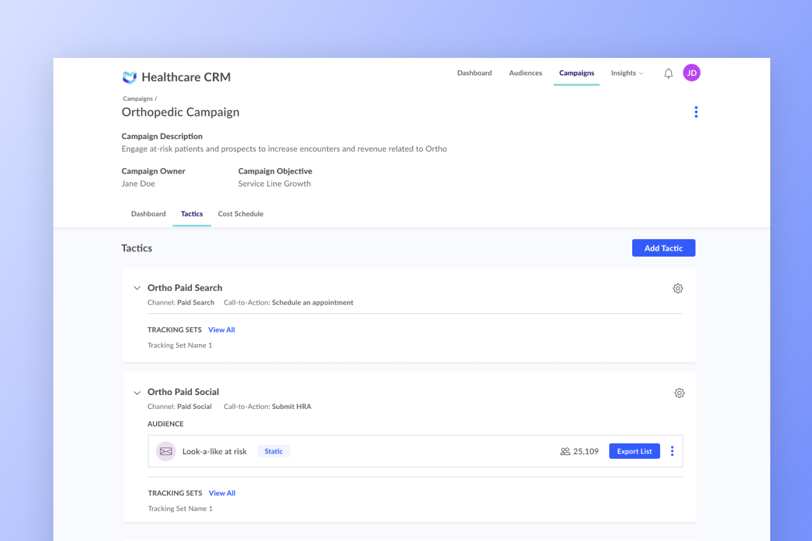

RESEARCH
Hospital Marketers
We interviewed around 15 hospital marketers and focused on discovering the elements used within a campaign, how those elements relate to each other and how marketers expected those elements to be reported on.
From those interviews we were able to understand the marketers process outlined below
TESTING
Campaign Structure
After defining a typical marketer process, two campaign structure concepts were developed. Option One kept all the elements the marketer needs under the parent of the campaign, where Option Two associated the elements under a specific tactic. The concepts were tested with 5 users and 3 potential clients.
Option One
Option Two
Most participants preferred Option Two. When asked how well the process matched how they execute their campaigns the average score 4.125 out of 5.
SOLUTION
Interface Development
From that feedback we removed the description field and changed the visual treatment to a modal. Instead of using text input fields, we created a smart typeahead drop down fields. For example if you selected a category and then proceeded to the manufacturing dropdown, you would only be able to select manufacturer’s from the selected category.
